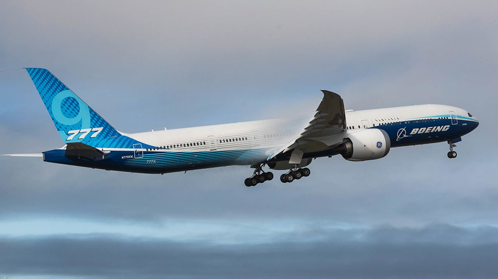
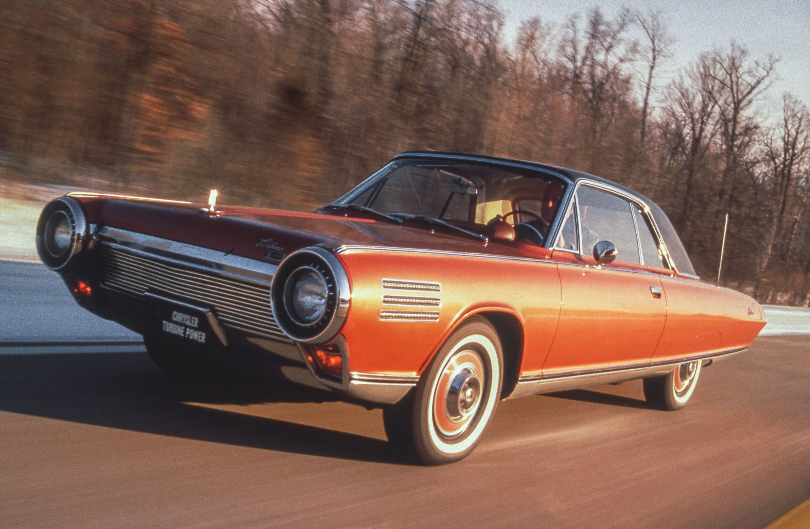
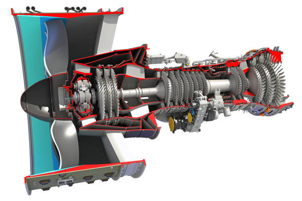
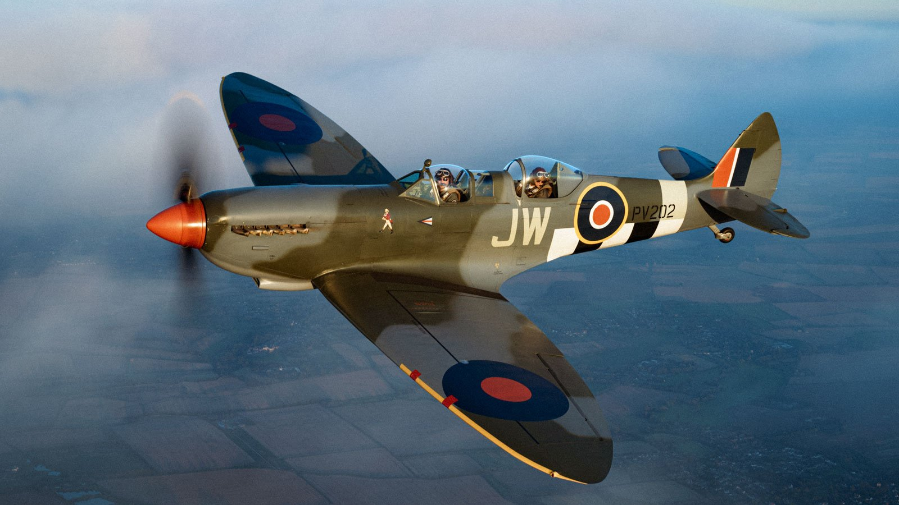
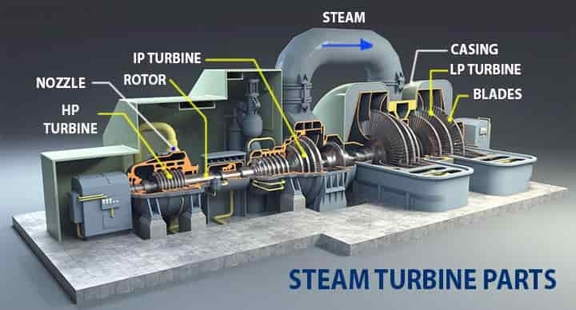
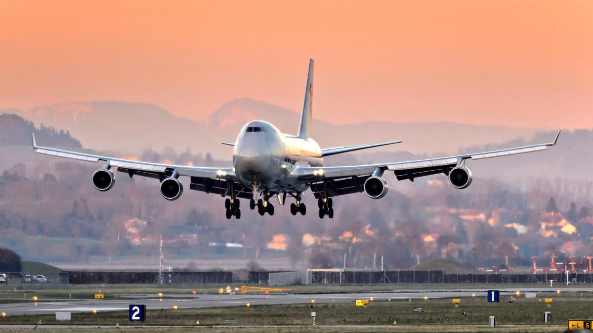

Aircraft and Turbines
Power to fly and to Power for your Home

Since the inception of powered flight, the amount of time and dedication to aerial vehicles is such that in one lift time humanity went from flying in wood and cloth planes to landing a man on the Moon. People love three dimensional travel. Like costly appearal, aircraft are elegant things with their ability to soar. Not to mention A380 and Boeing 747 monstrasities surpassing the size of a small building is truly remarkable and a feat of engineering.
And the engines that power commercial aircraft, the CFM International LEAP-1B, Rolls Royce Trent 1000, General Electric GE90 engines produce splendid power. Turbines have also been used to power many things like the Chrysler Turbine car as well as turn steam power into electric power. This type of engine is very important and very efficient.

The Boeing 777 is over 16ft tall, 209ft 1in long, and a wing span of 212ft 7in. Meant for long haul flights these aircraft can travel up to 8500 miles

There were 50 1964 Chrysler Turbine cars made, but due to high emissions, poor fuel efficiency and slow acceleration made th car unviable for consumer sales.

This is cross section of a turbofan engine. With the big fan providing a great portion of of the thrust as air move around and through the core. The air in the core is compressed, burned, and released.

The iconic Supermarine Spitfire could travel 360 mph and was critical in defeating Luftwaffe air attacks during the Battle of Britain in 1940, more than 20,000 were built.

Used in thermal power stations to produce rotary motion from pressurized steam to turn a generator.

The 747 was the first airplane called a "Jumbo Jet" as the first wide-body airliner and it first flew in February 1968. The Boeing 747 is called the "Queen of the Skies" and can carry over 450 people